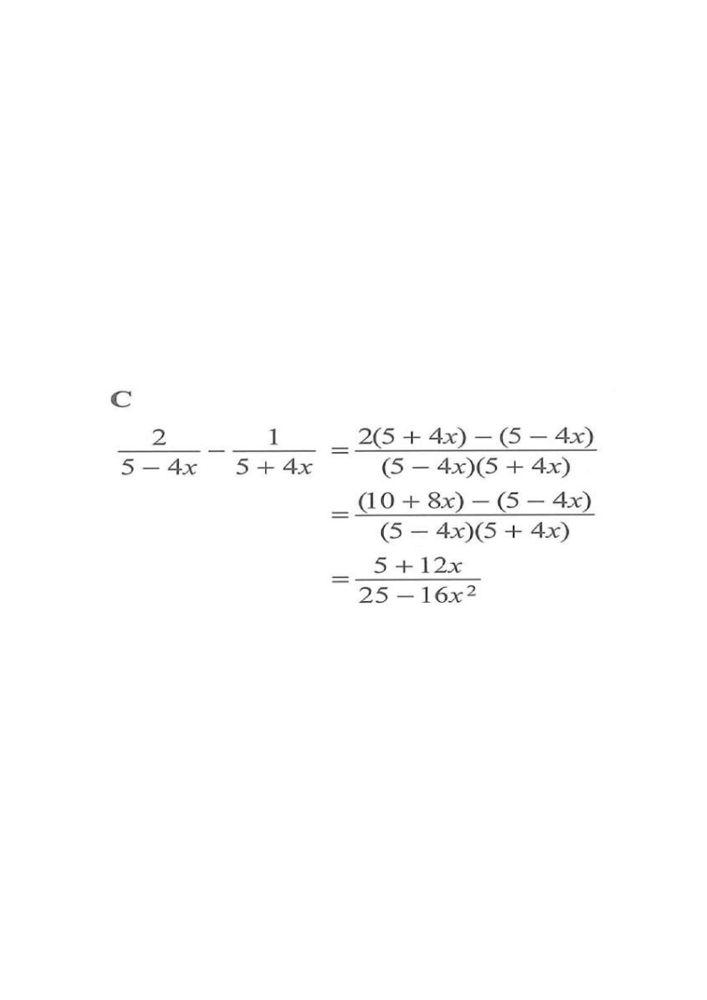

Simplify $\dfrac{2}{5-4x}-\dfrac{1}{5+4x}=$

The two denominators are $5-4x$ and $5+4x$ — these are conjugates, so their product gives a difference of two squares.
Common denominator $=(5-4x)(5+4x)=25-16x^{2}$ (using $(a-b)(a+b)=a^{2}-b^{2}$).
Hint: don't multiply out yet — keeping the factored form makes the numerator easier to expand.
Multiply the top and bottom of the first fraction by $(5+4x)$:
$\dfrac{2}{5-4x}=\dfrac{2(5+4x)}{(5-4x)(5+4x)}$
Multiply the top and bottom of the second fraction by $(5-4x)$:
$\dfrac{1}{5+4x}=\dfrac{1(5-4x)}{(5-4x)(5+4x)}$
Hint: make the denominators identical before combining — this is the key step of any fraction subtraction.
$\dfrac{2}{5-4x}-\dfrac{1}{5+4x}=\dfrac{2(5+4x)-(5-4x)}{(5-4x)(5+4x)}$
Hint: keep the bracket around $(5-4x)$ — the minus sign must be distributed to both terms.
$2(5+4x)=10+8x$ , $-(5-4x)=-5+4x$
So the numerator becomes $(10+8x)-(5-4x)=10+8x-5+4x$.
Hint: watch the signs — subtracting a negative gives a positive, so $-(-4x)=+4x$.
$10-5=5$ and $8x+4x=12x$, giving $5+12x$.
So the expression is $\dfrac{5+12x}{(5-4x)(5+4x)}$.
Hint: constant terms together, $x$ terms together.
$(5-4x)(5+4x)=5^{2}-(4x)^{2}=25-16x^{2}$.
Therefore
$\dfrac{2}{5-4x}-\dfrac{1}{5+4x}=\dfrac{5+12x}{25-16x^{2}}$
Hint: difference of two squares collapses the denominator into one neat term.